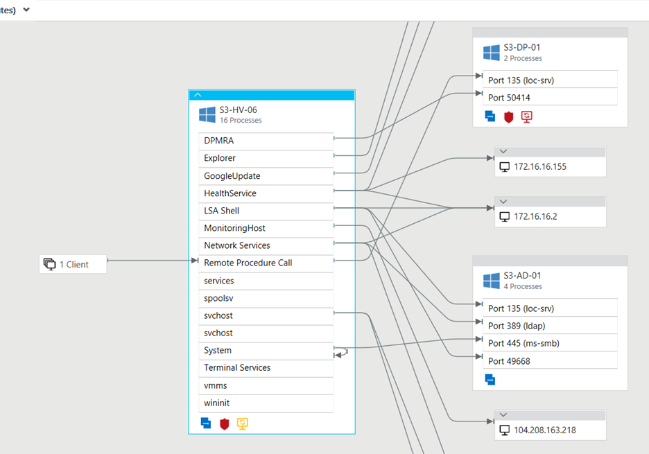
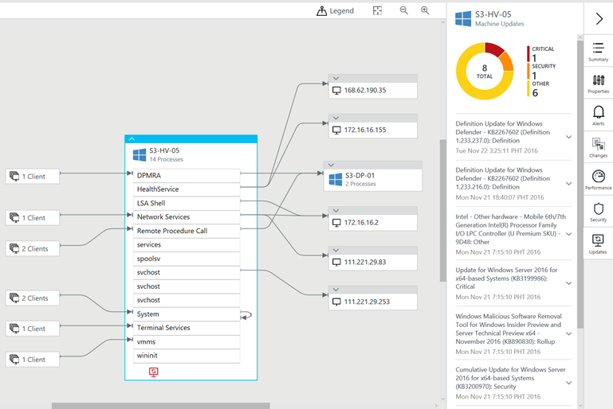
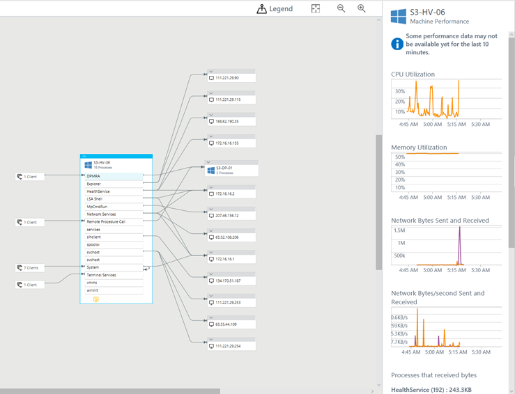
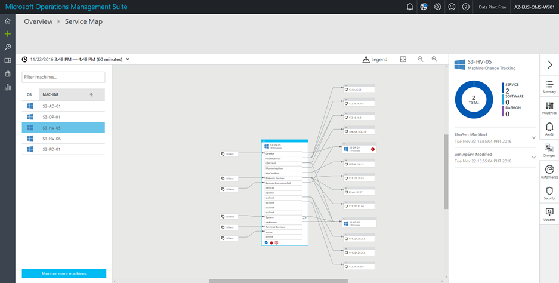
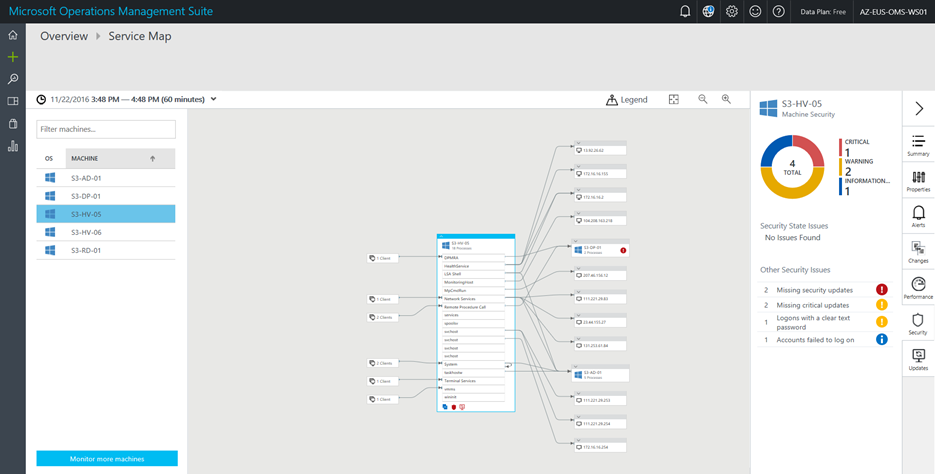
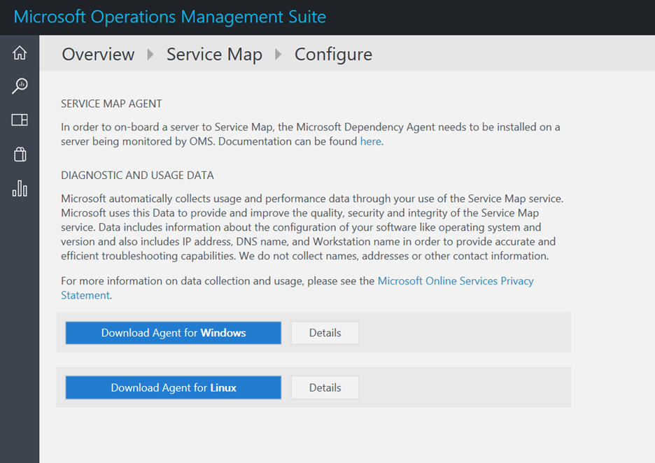
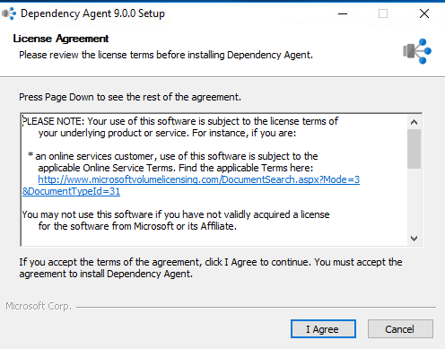
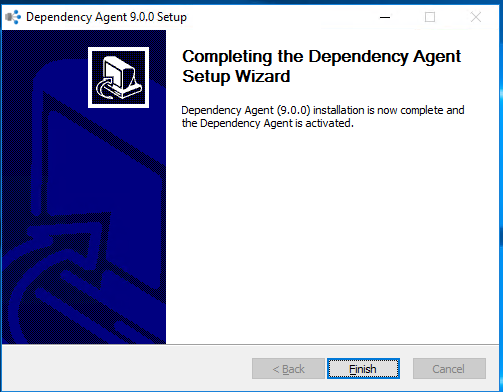
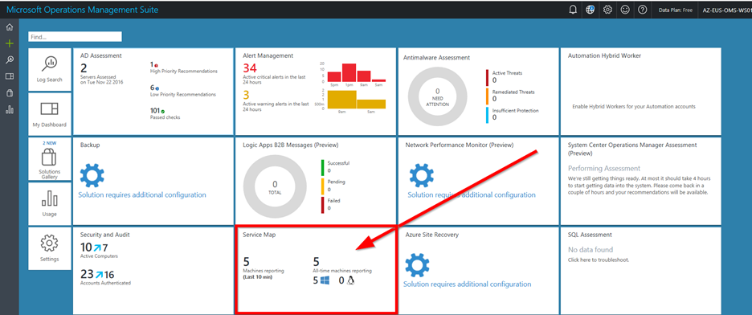

Application Dependency Monitoring with OMS
Last year Microsoft acquired a company that specializes in App Dependency Monitoring called Bluestripe. This solution is now built into OMS which automatically maps dependencies by monitoring inbounds and outbound connections. Dependency Monitor creates a Service Map which also integrates with other services such as Security & Update Solutions.
Below is an example where we have a Service Map which shows DPM Agent installed on a Hyper-V Host

We can also see Windows Updates on each of the dependent servers

Performance data is also visible within the Service Map

Change Tracking Solution is also integrated with Service Maps, which shows Service changes on dependent systems.

Malware Security solution also integrates with Service Maps, similar to other solutions

Let’s have a look at how we can set it up.
The first step is to have the OMS Agent installed either manually deployed / installed using other deployment tools (such as using SCOM / Config Manager or scripts). Service Maps also requires a dependency agent which needs to be installed on each server. We can download this agent by accessing Service Map solution configuration.

Download the agent and install it on Application Servers


Once the installation completes, within few minutes you will notice that the OMS Agent and Dependency Map agent reports back with Application dependencies.
